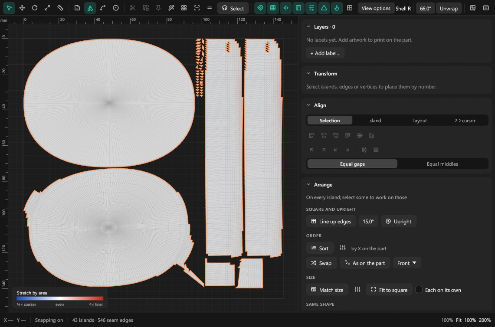
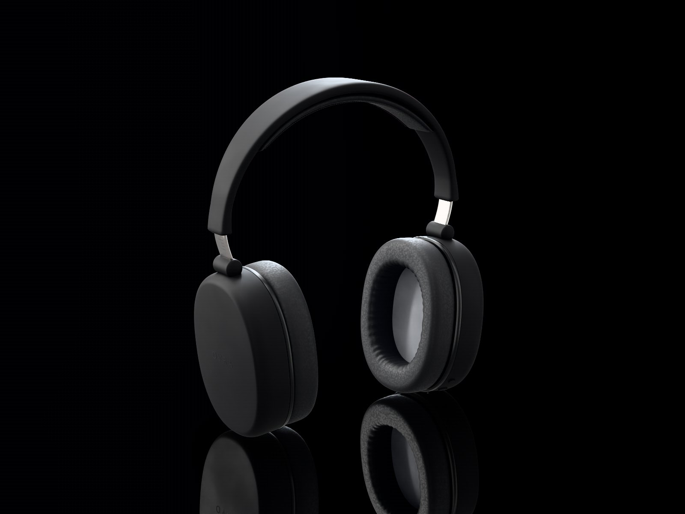
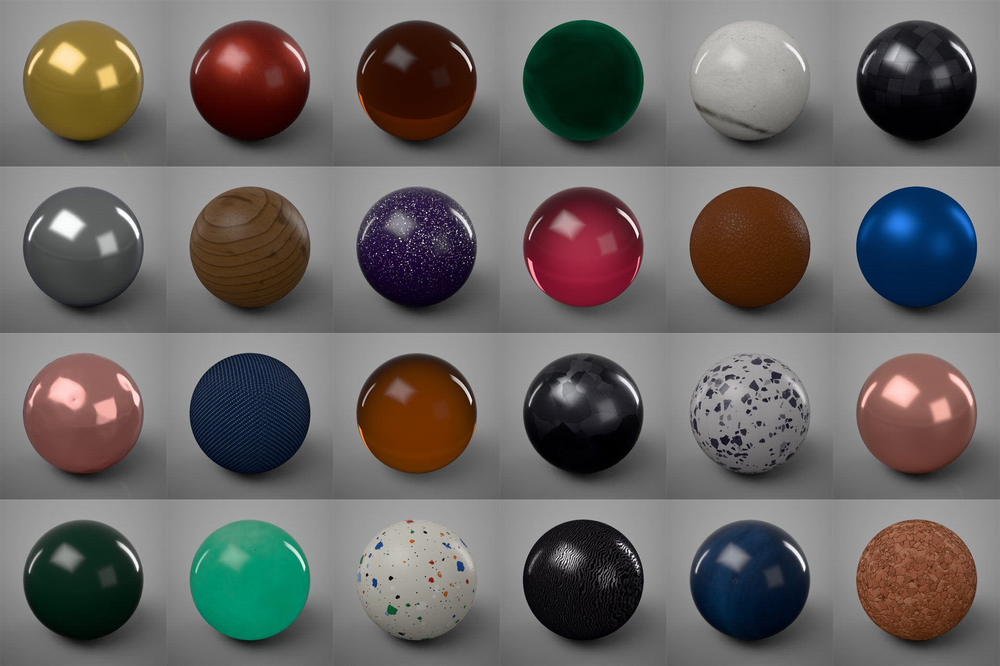

Smooth curves in Tequila's renderer
On curved glass and velvet, Tequila's own renderer can show the model's triangles, most of all in close-ups and in a mirror floor's reflection. Cycles draws the same models smooth.
What's being worked on now, what comes next, and what's further out. Plans move as people use Tequila and tell us what they need; what has actually shipped is on What's new.
Updated November 2, 2026
The work for the next release.
On curved glass and velvet, Tequila's own renderer can show the model's triangles, most of all in close-ups and in a mirror floor's reflection. Cycles draws the same models smooth.
Where a liquid touches its bottle, Cycles bends the light as if the liquid met air, so perfume and drinks look paler than in Tequila's renderer. Both renderers should agree on bottles.
Some exporters write a solid inside out. Tequila's renderer shows it as the solid it is, but Cycles shows an air bubble. Both should show the solid.
Planned once the work above ships.
A lamp seen in a mirror-smooth surface on every light path, parts that cast no shadow treated the same everywhere, and less noise from weak lamps in scenes with many lights.
A texture on velvet or fur colours the fibres too, not only the surface under them, and large parts get denser fibres.
Pins saved with the project and undoable, lines on the part hidden behind it, tighter Line up edges and As on the part, and the checker in every view and on every UV set.
A picture of each Studio in the Studio tab, and reordering them by dragging.
Turn, pan and zoom the view with a 3Dconnexion SpaceMouse, the way CAD apps do, with the other hand free for the mouse.
AMD graphics cards, several cards at once, and Intel and Apple-silicon Macs, tried on real computers as well as GitHub's. Have one? Tell us how it goes on Discord.
Wanted, but not scheduled yet.
Exploded views, camera fly-throughs, part reveals and motion blur, on top of today's turntables.
Free signing through the SignPath Foundation, so Windows stops warning about Tequila the first time it runs.
Materials from KeyShot scenes matched more closely to how KeyShot renders them.
Restyle a finished render, change its background or upscale it, guided by the render's own depth, normals and masks.
Look over a scene with others and leave notes on it, made practical by Tequila's open file format.
The last three releases. Every version's full notes are on What's new.

A full UV editor, wireframe renders, KeyShot scenes, real fibres, spectral rendering, AMD cards and every card at once, Cycles on Linux, and Intel Macs.

Tequila on Linux, a start screen with sample scenes, updates from inside Tequila, studio presets, turntables, passes and relighting from Cycles, and AI apps in one click.

Auto Materials 3.0, plugins turned on in one click, more labels in the viewport, measured car-paint flakes from KeyShot packages, and opening files from the Mac's Finder.
Tell us on Discord, or open an issue on GitHub. What people using Tequila ask for shapes what moves up this list.